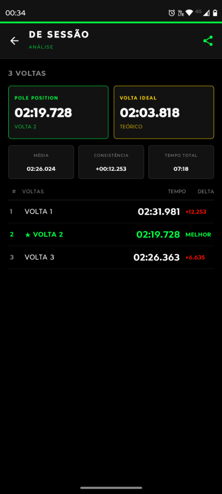
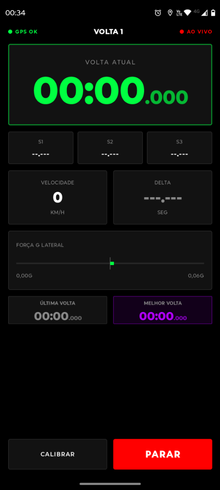

O Pole Position transforma seu smartphone num sistema completo de telemetria offline para kart e trackdays. GPS de alta frequência, intersecção de gates por vetor e áudio TTS integrados.


Tecnologias avançadas desenvolvidas para extrair cada milissegundo de performance em pista.
GPS de 10 Hz com suporte a antenas externas Bluetooth. Algoritmo de intersecção por vetores (raio zero) com interpolação de milissegundos.
Design de alto contraste F1 otimizado para sol direto. Dígitos tabelados, congelamento pós-volta de 3s, deltas e parciais coloridas.
Feedback em áudio em tempo real por sintetizador de voz (TTS) das suas parciais e tempos ao fechar setores e voltas.
Cronometragem baseada apenas na linha de início. Ideal para sessões de circuito aberto, trackdays e trajetos livres.
Mira interativa com ajuste de ângulo do gate (passos de 1° e 15°). Suporta até 2 setores customizados por circuito.
Históricos organizados por pista, com velocidade máxima, velocidades mínimas, Força G e exportação estruturada para arquivos CSV.
Ajuste o gate da linha de chegada no mapa de satélite e adicione os setores desejados.
Fixe o celular firmemente no cockpit, calibre os acelerômetros de Força G e conecte seus fones de ouvido.
Inicie a sessão e pilote. A primeira passagem cruza a linha iniciando a telemetria automaticamente.
Finalize a sessão no pit lane e exporte o relatório das voltas e dados consolidados em formato CSV.
Veja como nos comparamos com cronômetros de hardware caros e aplicativos convencionais.
| Recurso | Telemetria dedicada (MyChron/Alfano) | Aplicativos de GPS comuns | Pole Position App |
|---|---|---|---|
| Frequência GPS | Alta (10 Hz — 20 Hz) | Baixa (1 Hz típica) | Alta (Até 10 Hz com antena externa) |
| Custo | Elevado (R$ 3.000+) | Grátis / Assinatura | Gratuito (100% livre de custos) |
| Detecção de Linha | Sensor Magnético ou GPS | Raio de Proximidade (Inexato) | Intersecção Vetorial Rigorosa |
| Feedback de Áudio | Não possui | Simples ou Inexistente | Voz do Engenheiro (TTS volta e setores) |
| Exportação de Dados | Software proprietário / Cabo | Limitada ou Paga | CSV Aberto com colunas alinhadas |
| Processamento | 100% Local | Geralmente em Nuvem | 100% Offline no Dispositivo |
Ajustes criados para quem está dentro do cockpit pilotando, não apenas olhando para a tela.
Ativação inteligente do GPS de alta precisão apenas durante sessões ativas para economizar bateria.
Desativa notificações de outros aplicativos enquanto a sessão estiver rodando para manter o foco total.
Controle de intensidade de luz independente e travamento de orientação para visualização estável no suporte.
Desenvolvido com tecnologias modernas do ecossistema Android para máxima eficiência.